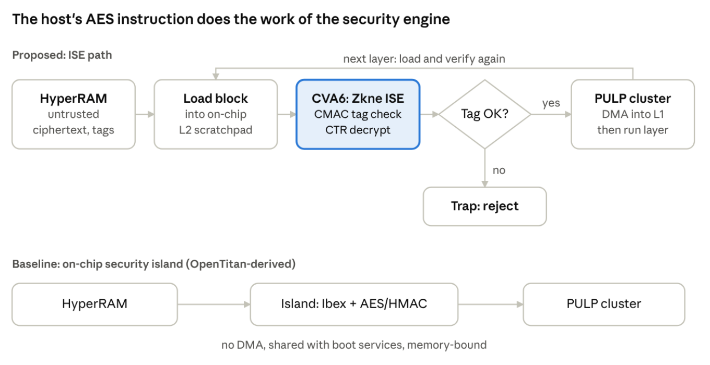
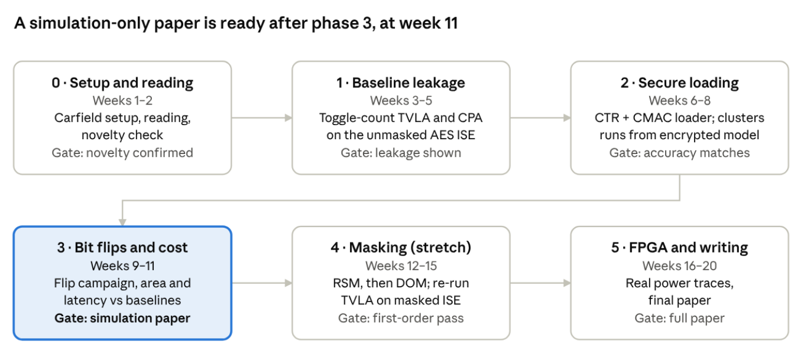

Revision note (Oct 16, 2026). The research question, design and experiments are unchanged. The tool flow is adapted to what is installed and licensed on the lab workstation: Synopsys VCS replaces QuestaSim for RTL simulation, and Cadence Genus and Joules with the TSMC 65 nm LP standard-cell library give area, Fmax and power without an FPGA. See Tool flow on the lab workstation. The FPGA (Vivado) plan is unchanged.
We propose using the host CPU's own AES instruction-set extension (ISE) to give confidentiality and integrity to neural-network model data on a RISC-V SoC with PULP multi-cluster accelerators, instead of sending all model data through the SoC's dedicated security engine.
The research question is the trade-off: how much area the ISE adds to the host core, how its model-load latency and CPU cost compare with the security engine, and for which model sizes, reload rates and cluster counts each is the better design point.
The design authenticates weights, layer descriptors and kernel code (not weights alone). It is evaluated against RowHammer-style bit-flip attacks and power side-channel leakage of the AES instruction.
Platform: a Carfield-style open-source SoC from the PULP platform: a CVA6 RV64 host running the standard Zkne AES instructions, PULP compute clusters (a 12-core integer cluster with the RedMulE matrix engine, and a Spatz vector cluster) that pull data into their L1 scratchpads by DMA, and an OpenTitan-derived security island with AES and SHA-2/HMAC engines that also holds keys and runs secure boot.
Tools: RTL simulation in Synopsys VCS; area, Fmax and power from Cadence Genus and Joules on the TSMC 65 nm LP standard-cell library; functional runs in Spike. All are available on the lab workstation.
Edge AI models are valuable IP and often safety-critical, yet they sit in off-chip DRAM, which the attacker can read and disturb. Two threats target them.
Existing defenses fall into two groups:
| Approach | Examples | Limitation for small edge cores |
|---|---|---|
| Dedicated inline crypto engine (AES-CTR/GCM + MAC between memory and accelerator) | GuardNN (DAC 2022), SeDA (DAC 2025), AccShield (DAC 2023) | Extra area and control logic, always present |
| Software integrity checks (hashes, checksums) | AccHashtag, BitShield (NDSS 2025) | No confidentiality; slow without hardware help |
Meanwhile, RISC-V already has a ratified scalar crypto extension (Zkn/Zkne) with AES round instructions. It requires constant-time execution but makes no promise about power leakage.
The gap: no work we found uses a CPU crypto ISE to protect model data for accelerator clusters that share on-chip memory with the host, and no work measures its area and latency against the SoC's own security engine at edge scale.
Problem statement. On a RISC-V SoC with a CVA6 host, PULP accelerator clusters and an on-chip security engine, can confidential and authenticated model loading be built from the host's crypto ISE instead of the security engine — and under which conditions (model size, reload frequency, number of clusters, area budget) is it the better design point?
| Element | Definition in this work |
|---|---|
| Assets | Model weights, layer descriptors (shapes, strides, quantization scales, activation type), kernel code, model key |
| Attacker can | Read and modify off-chip DRAM, including RowHammer bit flips; passively observe power/EM during execution |
| Trusted (TCB) | CVA6 pipeline and register file, the on-chip L2 scratchpad, the clusters' L1 scratchpads (TCDM), the key register, and the security island, which provisions the key and reference tags at secure boot |
| Out of scope | Invasive and laser attacks, clock/voltage glitching, software exploits, denial of service (we detect, not correct) |
Security goals.
Freshness (rollback to an older model) is an open scoping question; see the advisor points below.
| Category | Items |
|---|---|
| In scope | Carfield-style SoC: CVA6 host with standard Zkne AES instructions; the PULP integer cluster (with RedMulE) and Spatz vector cluster as NN accelerators; the OpenTitan-derived security island as root of trust and engine baseline; AES-CTR + CMAC model loader in RISC-V assembly on CVA6; protection of weights, layer descriptors and kernel code; simulated bit-flip campaign; area (65 nm ASIC synthesis) and latency comparison against baselines; first-order leakage assessment (TVLA, CPA) in simulation (VCS toggle counts and Joules per-cycle power) |
| Stretch goals | First-order masked ISE (RSM, then DOM); FPGA power-trace validation; Zkne on the cluster cores so each cluster decrypts its own tiles in parallel; a row-activation throttle at the cluster DMA port (accelerator as RowHammer aggressor) |
| Out of scope | Real RowHammer on hardware; clock/voltage glitching and laser faults; protecting weights during computation; OS and software exploits; LLM-scale models |
We build on published, open-source generators rather than a hand-made core, so results are reproducible and comparable with prior work.
| Part | What we use | Why |
|---|---|---|
| SoC | Carfield (PULP platform, ETH Zurich and University of Bologna), built around the Cheshire host | Open source (Solderpad licence); already combines a CVA6 host, accelerator clusters and a security island; FPGA flow on the Xilinx VCU128 |
| CPU + AES ISE | CVA6 RV64 core with its ZKN (scalar crypto) parameter enabled | Standard Zkne instructions (aes64es/aes64esm) instead of a custom opcode, so results compare directly with prior Zkne work |
| AI accelerators | PULP integer cluster: 12 RV32 cores with DSP/QNN extensions, a shared L1 scratchpad (TCDM), a DMA and the RedMulE matrix engine; plus the Spatz RVV vector cluster | Multi-cluster offload: the host hands work to each cluster, which pulls its tiles from L2 by DMA — the common pattern in edge SoCs |
| Security engine (baseline and root of trust) | OpenTitan-derived security island: Ibex core, AES-128 and SHA-2/HMAC engines, key storage, secure boot; reached through mailboxes | Already on chip; AES measured at about 16 cycles/byte from system RAM on a CVA6 + PULP + OpenTitan SoC (CF 2024) |
| Simulation | Synopsys VCS U-2023.03 for cycle counts: CVA6 and the Cheshire host domain through their official VCS flows, and full Carfield (clusters and security island) through a Bender-generated VCS build; Spike for functional runs of the CVA6 loader | Licensed on the lab workstation; host, clusters and security island timed in one model. Carfield upstream supports only QuestaSim, which the lab does not have |
| Synthesis and power | Cadence Genus 25.1 (Synopsys Design Compiler as a cross-check) with the TSMC 65 nm LP standard-cell library; Cadence Joules 25.1 for per-cycle power from VCS activity | Licensed on the lab workstation; gives area (µm², kGE), Fmax and power traces without an FPGA |
Every tool below was checked on the lab workstation (RHEL 9, 64 threads, 30 GiB RAM) on Oct 16, 2026.
| Need | Original plan | On the lab workstation | Status |
|---|---|---|---|
| RTL simulation (SoC, cycle counts) | QuestaSim (Carfield's only supported simulator) | Synopsys VCS U-2023.03 | Licensed and tested. Cheshire and CVA6 have official VCS flows; full Carfield needs a VCS port (Bender emits the compile script). Cadence Xcelium licences exist, but the tool is not installed |
| Functional ISA simulation | Spike | Spike, user-local build | To install (needs dtc) |
| Hardware IP management | Bender | Bender 0.32.1, user-local | Installed |
| CVA6 cross-compiler | RISC-V GCC with Zkne | xPack riscv-none-elf-gcc 15.2.0 | Installed by the lab; -march=rv64gc_zkne verified |
| Cluster software | PULP GCC (Xpulp), Spatz LLVM | User-local installs | Needed in phase 2 |
| Area and Fmax | FPGA (VCU128) LUTs/FFs | Genus 25.1 / DC T-2022.03 on TSMC 65 nm LP (tcbn65lp, all corners); Innovus 25.1 for post-layout | Licensed and tested; FPGA stays a stretch goal |
| Power traces for TVLA/CPA | Toggle counts in simulation, then FPGA traces | VCS toggle counts (VCD) and Joules 25.1 time-based power on the 65 nm netlist | Licensed and tested |
| Waveforms, equivalence | — | VCS DVE; Formality X-2025.06 (masked vs unmasked round) | Available |
The TSMC library is under the foundry NDA: its files stay on the workstation, and only derived numbers (area, timing, power) are reported.
Other platforms considered.
| Candidate | Coupling to the CPU | Why not chosen |
|---|---|---|
| Chipyard: Rocket + Gemmini (earlier choice) | Tight: RoCC custom instructions | Good Zkne support, but one tightly coupled accelerator and no on-chip security engine to compare against |
| NVDLA (NVIDIA open-source DLA) | Loose: memory-mapped registers + DMA | Large; no RISC-V host ISE path or security engine in the open release |
| VTA (Apache TVM) | Loose: host-driven FPGA design | Good compiler flow, but no RISC-V ISE path |
| Our own 5-stage core + custom MAC unit | Tight | Full control, but not a recognized baseline; reviewers may doubt the numbers |
Design issue this platform raises. Each cluster fetches tiles into its L1 scratchpad with its own DMA, from L2 or HyperRAM, not from the host's registers. So CVA6 writes each verified, decrypted tile into the on-chip L2 scratchpad (a scratchpad, not a cache, so it cannot be evicted to DRAM) and only then hands it to a cluster. Two questions follow, and we measure both: other bus masters (the other cluster, the safety island) must not read or overwrite that L2 region between check and use, and one host core must keep up with several clusters at once.
The host CPU (CVA6) verifies and decrypts every model block with its own AES instruction before any cluster may use it.

A cluster only runs on blocks whose tag matched, and each layer is loaded and verified again just before it runs.
Protocol per block (encrypt-then-MAC):
Design choices.
The ISE path spends CPU time and a little core area to load faster and more flexibly; the security island keeps the key isolated and the CPU free, but is shared and memory-bound.
| Dimension | ISE path on CVA6 (proposed) | Security island engine | Expected winner |
|---|---|---|---|
| Added silicon area | Round datapath (S-boxes, MixColumns) inside the CVA6 ALU | None if reused: the island is already on chip as root of trust | Security island |
| Load throughput | About 2.5 AES instructions per byte for CTR + CMAC, plus load/XOR overhead | No DMA: Ibex copies data into the engine; about 16 cycles/byte for AES from RAM (CF 2024) | ISE (to be measured) |
| Host CPU availability | CVA6 busy during decrypt/verify | CVA6 free; island works in the background | Security island |
| Scaling with clusters | One host core feeds every cluster; may become the bottleneck | One shared engine, also serving boot and attestation | Depends on workload |
| Flexibility (crypto agility) | Software: mode, MAC, coverage, tag granularity | Fixed engines; behaviour set by Ibex firmware | ISE |
| Side-channel surface | Key enters the shared CPU pipeline (forwarding, register file) | Key stays inside the isolated island | Security island, unless the ISE is masked |
| Best fit | Large or often reloaded models feeding several clusters | Small models loaded once at boot; strictest key isolation | Depends on workload |
First-order cost model (to be validated by measurement):
T_{ISE} \approx N_{blk} \cdot \left( 2 \cdot R \cdot k \cdot \mathrm{CPI} + c_{ovh} \right)
T_{eng} \approx S_{model} \cdot \left( c_{AES} + c_{MAC} \right) + N_{req} \cdot c_{mbox}
Here N_blk = model size / 16 bytes, R = 10 AES-128 rounds, k = instructions per round (2 for RV64 Zkne: aes64esm on each half of the state), the factor 2 covers CTR plus CMAC, c_ovh = load/XOR/compare overhead, c_AES and c_MAC = the island's cycles per byte for AES and the MAC (AES about 16 cycles/byte from RAM in CF 2024), N_req = mailbox requests and c_mbox = cycles per mailbox round trip.
The paper's key output is the break-even region: for which model sizes, reload rates and cluster counts the ISE's small added area buys enough load speed to beat the security island.
| RQ | Question | Hypothesis |
|---|---|---|
| RQ1 — Feasibility | Can a crypto ISE on the host alone deliver confidential, authenticated, verify-before-use model loading for PULP accelerator clusters? | Yes; with a t-bit tag, an undetected modification succeeds with probability about 2^-t |
| RQ2 — Cost | What are the area, Fmax, load-latency and energy costs versus the SoC's security engine, and where is the break-even point? | The ISE costs a small fraction of core area (a DOM-masked Zkne added 0.39% on CV32E40S) and loads faster than the security island, which has no DMA and is memory-bound; the island wins on key isolation and for boot-time-only loading |
| RQ3 — Coverage | Does authenticating descriptors and code catch structure-based bit flips that weight-only checks miss? | Yes; weight-only checking misses flips in descriptors and code, full coverage catches all of them |
| RQ4 — Side channels | Does the unprotected ISE leak the model key through power, and does first-order masking remove that leakage at acceptable cost? | Unmasked fails TVLA (max |t| > 4.5); masked passes at first order, with measurable area and cycle overhead |
Platform. The Carfield SoC above (CVA6 with Zkne, the PULP integer and Spatz clusters, the security island). Functional runs of the loader in Spike; cycle-accurate runs in RTL simulation with Synopsys VCS; area and Fmax from Cadence Genus synthesis on the TSMC 65 nm LP library, and per-cycle power from Cadence Joules using VCS switching activity; power traces on a VCU128 FPGA if we can get one.
Baselines.
Workloads. Small quantized models (MLP and a tiny CNN on MNIST/CIFAR-10), swept from roughly 10 KB to 1 MB of parameters, run on the integer cluster (int8 on the cores, FP16 on RedMulE) and on the Spatz cluster, alone and both at once.
| Experiment | Answers | Method | Metrics |
|---|---|---|---|
| E1 Cost sweep | RQ2 | Load each model under every baseline | Area (µm², kGE) and Fmax from 65 nm synthesis, load cycles, cycles/byte, energy (Joules) |
| E2 Bit-flip campaign | RQ1, RQ3 | Inject random flips, targeted flips (progressive bit search), and flips in descriptors and code into the DRAM image | Accuracy with no protection, detection rate with weight-only vs full coverage |
| E3 Leakage assessment | RQ4 | Fixed-vs-random TVLA and CPA on toggle-count traces from VCS and per-cycle power traces from Joules (65 nm netlist), then on FPGA power traces | Max |t|, traces to key recovery, masking overhead |
| E4 Granularity | RQ2 | Vary tag granularity (per layer vs per tile) and the number of clusters fed at once | Load latency, tag storage, re-verify cost, cluster idle time waiting for the host |
The core contribution (secure loading, bit flips, cost) comes first, so a simulation-only paper exists by week 11; masking and FPGA work build on it.

Each phase ends at a gate; if a stretch phase slips, the paper still stands on phases 0–3.
| # | Deliverable | Done when |
|---|---|---|
| D1 | Carfield config: CVA6 with Zkne, both PULP clusters and the security island; mailbox driver for the engine baseline | Builds and passes Carfield's cluster-offload and secure-boot tests in RTL simulation (VCS; host domain first, through Cheshire's VCS flow); Zkne instructions pass their test vectors on CVA6 |
| D2 | Secure loader: AES-CTR + CMAC in RISC-V assembly, verify-before-use gate | Model runs from encrypted memory with the same accuracy as the PyTorch reference |
| D3 | Bit-flip campaign results | Every injected flip in weights, descriptors and code is detected (up to the 2^-t tag bound); weight-only checking shown to miss descriptor and code flips |
| D4 | Cost comparison | Area and Fmax (65 nm synthesis) and load latency measured for all four baselines across at least three model sizes, with a break-even plot |
| D5 | Leakage report | Unmasked ISE shown to leak (max |t| > 4.5); masked ISE passes first-order TVLA in simulation (VCS and Joules) (stretch) |
| D6 | Paper draft | Simulation-only version ready after phase 3; full version after phase 5 |
| Risk | Fallback |
|---|---|
| Novelty check finds prior work on ISE-based model protection | Shift the main claim to the cost trade-off against the security engine and to descriptor/code coverage |
| CVA6's ZKN option does not cover all the RV64 AES instructions we need | Add the missing Zkne instructions to CVA6's ALU in SystemVerilog, reusing a reference round datapath |
| QuestaSim, the only simulator Carfield supports upstream, is not available on the lab workstation | Run CVA6 and the Cheshire host domain through their official VCS flows first; port the full Carfield testbench to VCS using Bender's VCS script; ask for Cadence Xcelium to be installed (licences already exist) or for QuestaSim access |
| Carfield's build and simulation flow takes long to learn | Start with the stock configuration and the integer cluster only; change only software until the masking phase |
| Other bus masters can read or overwrite plaintext tiles in L2 | Reserve an L2 region with access control, or report it as a measured limit of the ISE path |
| One CVA6 cannot feed two clusters fast enough | Report host throughput per cluster as a result; Zkne on the cluster cores becomes the next step |
| Security-island firmware and mailbox driver take too long | Use the published CF 2024 figures, normalized, as the engine baseline |
| RTL simulation of a full model is too slow | Use Spike for functional runs and a one- or two-layer model in RTL; scale results by block count |
| Masking CVA6's AES datapath is hard | Prototype the masked round in Verilog first, or reuse OpenTitan's DOM S-box |
| Full Carfield does not fit our FPGA | Build a reduced config (CVA6 + integer cluster + security island), or report RTL and 65 nm synthesis results only |
| No power-measurement gear for the FPGA | Use Joules per-cycle power on the 65 nm netlist, an on-chip ring-oscillator or delay-line sensor, or report simulation only |
Contributions.
How we differ from the closest work.
| Work | What it does | Difference |
|---|---|---|
| GuardNN, SeDA, AccShield | Dedicated engines for accelerator memory | We use the CPU's ISE, no new engine |
| BitShield, AccHashtag | Software integrity checks for DNNs | We add confidentiality and hardware-assisted crypto |
| DOM-masked Zkne (2026), CryptRISC (2026) | Masked RISC-V AES instructions | We apply a masked ISE to an ML use case and measure system cost |
| OpenTitan as crypto accelerator (CF 2024) | Measures the security island's AES/HMAC throughput on a CVA6 + PULP + OpenTitan SoC | We use the island for model loading and compare it with a host ISE |
Novelty check still to do. The "no prior work" claim comes from a limited search. Before writing, search Google Scholar and IACR ePrint for: "RISC-V crypto instruction neural network weights", "ISE model encryption accelerator", "Zkne DNN", "CV-X-IF security", and "OpenTitan security island DNN model".
| Term | Meaning |
|---|---|
| ISE (instruction-set extension) | New instructions added to a CPU, here the AES round instructions |
| Zkn / Zkne | RISC-V's standard scalar crypto extensions; Zkne covers AES encryption (aes64es, aes64esm on RV64) |
| Carfield | PULP's open-source mixed-criticality SoC: CVA6 host, accelerator clusters, security and safety islands |
| CVA6 | A 64-bit, 6-stage, in-order, Linux-capable RISC-V core from the OpenHW Group; the host CPU here |
| PULP cluster | A group of small 32-bit RISC-V cores sharing one L1 scratchpad, fed by its own DMA |
| TCDM | Tightly coupled data memory: the cluster's shared, multi-banked L1 scratchpad |
| RedMulE | A matrix-multiplication engine attached to the integer cluster's L1 |
| Spatz | A compact RISC-V vector (RVV) cluster for floating-point work |
| Security island | Carfield's OpenTitan-derived root of trust: Ibex core, AES and SHA-2/HMAC engines, key storage, secure boot |
| Mailbox | Shared registers plus interrupts through which the host asks the security island for a service |
| L2 scratchpad | On-chip SRAM shared by host and clusters; software-managed, so data is never evicted to DRAM |
| Dedicated inline engine | A separate crypto block on the memory path that encrypts/decrypts data automatically |
| Confidentiality | The attacker cannot read the data |
| Integrity / authenticity | Any change to the data is detected, and only the key holder can make valid data |
| AES-CTR | Counter mode: AES encrypts a counter to make a keystream, XORed with the data |
| MAC / CMAC / tag | A keyed checksum; CMAC builds it from AES; the short output is the tag |
| Encrypt-then-MAC | Encrypt first, then compute the MAC over the ciphertext; the recommended order |
| Verify-before-use / TOCTOU | Only use data after it passes the check, so it cannot change between check and use |
| Layer descriptor | The settings of a layer: shapes, strides, quantization scales, activation type |
| Bit-flip attack (BFA) | Flipping chosen bits in a model to break it or plant a backdoor |
| RowHammer | Repeatedly accessing DRAM rows to flip bits in nearby rows |
| Side-channel attack (SCA) | Learning secrets from power, EM or timing instead of the data itself |
| CPA | Correlation power analysis: matching power traces to guessed key bytes |
| TVLA | Test vector leakage assessment: a t-test; |t| > 4.5 means leakage |
| Masking (DOM) | Splitting secrets into random shares so power does not depend on them; DOM is a glitch-resistant form |
| Spike | The RISC-V instruction-level simulator |
| TCB | Trusted computing base: the parts assumed secure |
| VCS | Synopsys's SystemVerilog simulator; used here instead of QuestaSim |
| Bender | The PULP platform's tool that fetches the right versions of all hardware IPs and writes simulator/synthesis scripts |
| Genus / Design Compiler | Logic synthesis tools (Cadence / Synopsys) that turn RTL into standard cells and report area and timing |
| Joules | Cadence's RTL/gate-level power tool; with simulation activity it gives power per clock cycle |
| TSMC 65 nm LP | The lab's standard-cell library (tcbn65lp) used for synthesis, timing and power numbers |